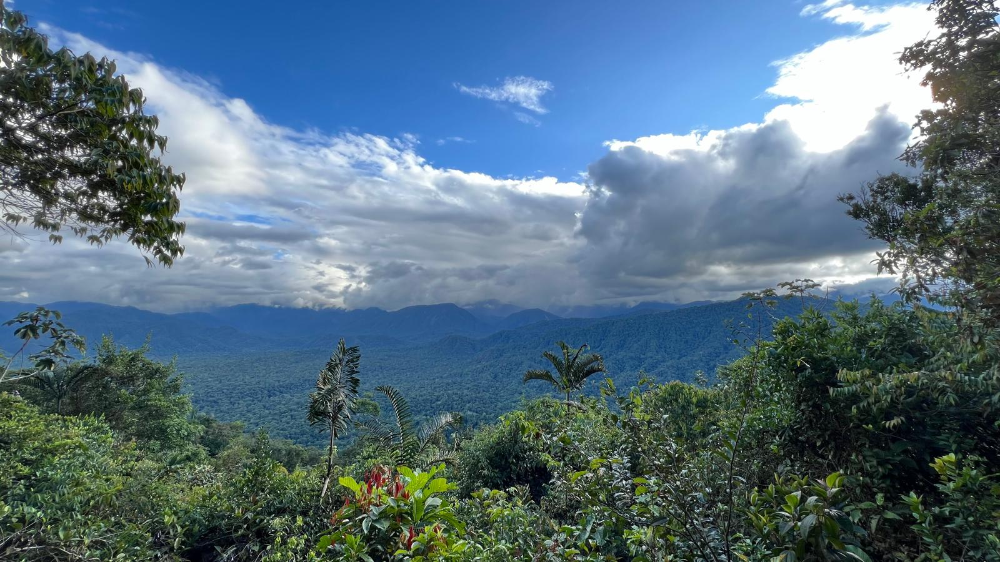

Jackie Garcia-Yi
Environmental Economist & Co-Founder, Ecosonus
AI · Biodiversity · Nature Tech

About Me
I am an Environmental Economist and Co-Founder of Ecosonus, working at the intersection of biodiversity, artificial intelligence, data science, and environmental decision-making.
I bring extensive international experience from the United Nations, where I managed multi-million-dollar environmental and development portfolios, led complex international programmes, mobilized resources, and worked with governments, international organizations, and multidisciplinary teams across countries.
My background combines Environmental Economics, Data Science, Ecology, and Food Technology & Engineering. Today, I apply this interdisciplinary expertise to develop scalable solutions for biodiversity, climate resilience, sustainable food systems, and responsible AI.
Ecosonus
I co-founded Ecosonus, a nature-tech initiative developing AI-powered solutions for biodiversity monitoring and environmental decision-making.
Our work combines bioacoustics, remote sensing, geospatial modelling, artificial intelligence, and ecological data to generate actionable insights for conservation, ecosystem management, climate resilience, and nature-based tourism.
Recognition & Funding
- Awarded funding from WILDLABS, a global conservation technology network — July 2026.
- Second Place, e-Tourism Competition, organized by Incubagraria and MINCETUR, including seed funding — July 2026.
- Awarded funding from the British Ecological Society — May 2026.
- Selected as one of 20 startups for the Social Innovation Lab, organized by the University of Pennsylvania and the University of Oxford — November 2025.
- Second Place, 2nd Copernicus Latin America Hackathon, European Union — August 2025.
- Selected among the leading submissions to the United Nations AI for Good – EW4All Innovation Challenge, resulting in a feature in the Solutions Spotlight of the EW4All AI Subgroup — August 2025.
Current Roles
Co-Founder
Nature Tech, biodiversity monitoring, AI, bioacoustics, remote sensing, and environmental intelligence.
Senior Fellow – Responsible AI
Lead Junior Fellows in responsible AI assessments for startups, including AI governance, risk assessment, data practices, evaluation, monitoring, and implementation roadmaps.
MBA Professor
Teach Ethics & Sustainable Development, integrating sustainability strategy, ESG, climate and nature-related risks, biodiversity, impact assessment, and responsible AI.
Selected Projects
Strengthening Climate Resilience through Forest-Based Risk Reduction in Peru

This project aims to enhance disaster and climate resilience in Peru’s Yanachaga-Chemillén National Park and surrounding communities by protecting forest ecosystems that naturally reduce landslide and flood risks.
Using Google AlphaEarth and Sentinel satellite data, the project identifies and monitors critical forest areas and integrates risk and ecosystem data into decision-support tools.
The project won Second Place in the 2nd Copernicus Latin America Hackathon, organized by the European Union in August 2025.
Multimodal AI for Acoustic Bird Species Identification in Support of Ecotourism and Conservation

This project develops a multimodal AI application supporting ecotourism and biodiversity conservation in remote, species-rich areas.
- Bird identification using a hybrid BirdNET-based model
- Custom transfer learning for local and endemic species
- Agentic LLM biodiversity assistant
- Species sound libraries and photo galleries
- Ecological maps using remote sensing data
- Scalable cloud infrastructure
Time Series Prediction of Outbreaks of Infectious Diseases

This project explores predictive modelling for infectious disease outbreaks using SMA, ARMA, RNN, and LSTM models together with digital-stream data such as Google search trends.
Deep learning models outperformed traditional baselines in forecasting COVID-19 cases, illustrating how predictive analytics can support earlier and more targeted public policy interventions.
Impact of COVID-19 on Education

This project examines the impact of COVID-19 on global primary education completion rates using Linear, Lasso, k-NN, and AdaBoost regression models.
Using UNESCO and World Bank data, the analysis estimates counterfactual 2020 outcomes without the pandemic and compares them with observed results.
Selected Research & Publications
NLP for UN Biodiversity Speeches

Applies Structural Topic Modeling and NLP to more than 5,000 pages of UN biodiversity policy speeches, identifying thematic shifts and regional discourse variation across conferences from 1994 to 2024.
Sustainable Income from Alternative Development

This report examines how alternative development initiatives can reduce reliance on illicit crop cultivation through improved rural livelihoods, market access, food security, and training.
UN World Drug Report: Alternative Development

The UN World Drug Report examines Alternative Development as a long-term strategy to address illicit crop cultivation, drawing on data from 53 projects and highlighting both achievements and implementation challenges.
Strategic Maps for Decision-Making

Spatial econometric modelling of opium poppy cultivation likelihood across Afghanistan, examining accessibility, rural population, climatic variables, and other potential drivers.
Remote Sensing for Poppy Detection

Evaluation of Landsat 8 imagery for identifying opium poppy crops in Afghanistan, including challenges related to spatial resolution, crop signatures, elevation, and agricultural calendars.
Global Overview of Alternative Development Projects

Global analysis of Alternative Development initiatives, highlighting challenges related to coordination, data, project duration, and long-term investments in sustainable rural livelihoods.
Development Barriers in Opium Poppy-Growing Villages in Shan State, Myanmar

Analysis of infrastructure, governance, environmental pressures, food security, market access, and livelihood vulnerability in opium poppy-growing areas of Shan State.
Understanding the Sustainable Development Challenges of Opium Poppy Cultivation in Afghanistan

Examines the relationship between opium poppy cultivation, rural livelihoods, and sustainable development challenges in Afghanistan.
Socio-Economics of Opium Poppy Cultivation in Shan State

Analysis of survey data from 591 villages, examining livelihood conditions, infrastructure, health care, market access, and regional differences associated with opium cultivation.
Additional UNODC Illicit Crop Monitoring Reports, 2015–2020

CV & Links
Contact Information
Email: jackiejgarciayi@gmail.com
Phone/WhatsApp: +43-6701889288